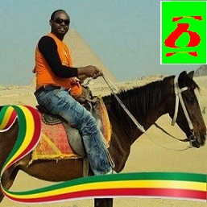

Universal Electric Access Program
|  |
Universal Electric Access Program
|
||
| |
| GPS
Vehicle Tracking System during Feasibility Study at Site
Trucking of each Section of MV Line through nearby Road During Feasibility study the route of MV Line is necessary. In order to capture the route of MV Line, we can take the nearby road which is significantlly with less error. For each section point or node point we shoud have to take a GPS point with branching point as information. Besides to this at each electrical devices point on the Line, we should have to take the GPS point too with thier necesssary attributes data or information. More >> You can follow me on my Facebook Page..... You can follow me on my Facebook Account.... You can follow me on my You Tube Channel-1...... You can follow me on my You Tube Channel-2...... You can follow me on my Twitter Page..... You can follow me on my Blogs..... |
Traucking
using Mobile Phone
News mellatech.com gonode.org |
Features of the System and Device
- Real Time tracking - Car maintainance - Speed limit monitoring - Geo-fence (route restriction) - Microphone and Speaker - Journey starts and stop report - Tracking via SMS (no internet needed) - 6 months journy history data - Distance Report - Trip Report - Stop Report - Driver Identification - Photo camera  Please play the
next National Song "Embi Leagere" |
| Designer:-
DANIEL ADMASSU
Free Download E-Books:- Download the JavaScript Application Design with below link Download the pls-cadd.pdf for Tower/Pole Design with below link Download the Design-manual-for-High-Voltage-Transmission-Lines.pdf with below link Design-Manual-for-High-Voltage-Transmission-Lines Download the LV Network Data Collection Guideline-doc.pdf with below link LV Network Data Collection Guideline-doc Download the TOR for GIS based LV Distribution Network Data Management System.pdf with below link TOR for GIS based LV Distribution Network Data Management System Download the TOR for SWER Distribution Network System.pdf with below link TOR for SWER Distribution Network System Download the Total Report on New Substation Around Menz Area.pdf with below link Total Report on New Substation Around Menz Area Download the Dnay Scientific Calculator and ETH Calendar -86Bit - Setup.msi with below link Dnay Scientific Calculator and ETH Calendar -86Bit - Setup.msi Dany-Disease and Treatment - 86Bit Setup.msi with below link Dany-Disease and Treatment - 86Bit Setup.msi Download the addis-abeba-berera-nat4.pdf with below link Download the History of Addis Ababa and Galla.pdf with below link History of Addis Ababa and Galla Download the 40/60-three_bed_room_winners (2nd round).pdf with below link 40/60 Condominium House-Threee Bed Winners in 2nd Round Download GIS Shape files for Province and Awraja of Ethiopia with below link GIS Shape files for Province and Awraja of Ethiopia Download DanyboyrpdaMatrix-Setup.msi with below link |
Basic Tasks:-
- Feasibility Study of rural Towns/Vilages to get electricity
for all Regions of Ethiopia
- Mapping of all electrified and none electrified Towns/Village for feasible
ones on GIS
- MV and LV Network Planning and Analysis